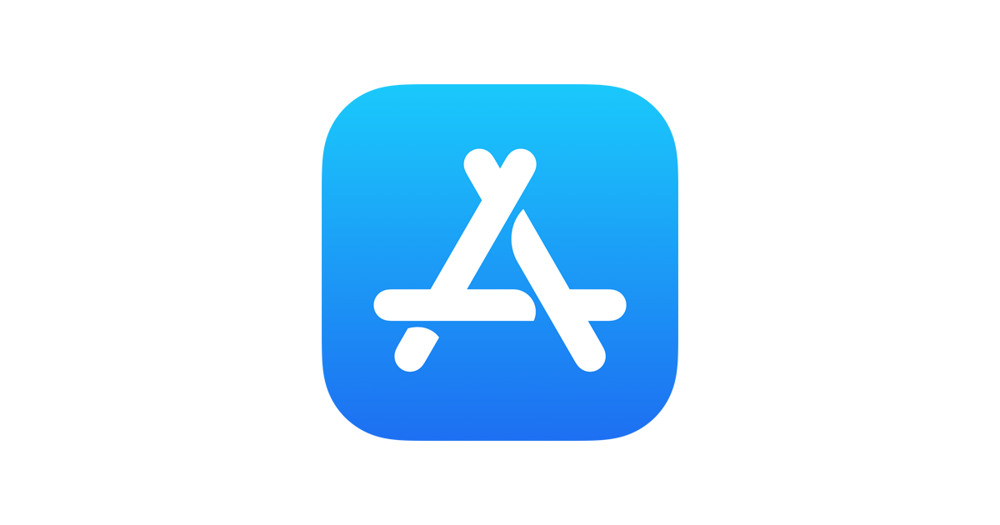
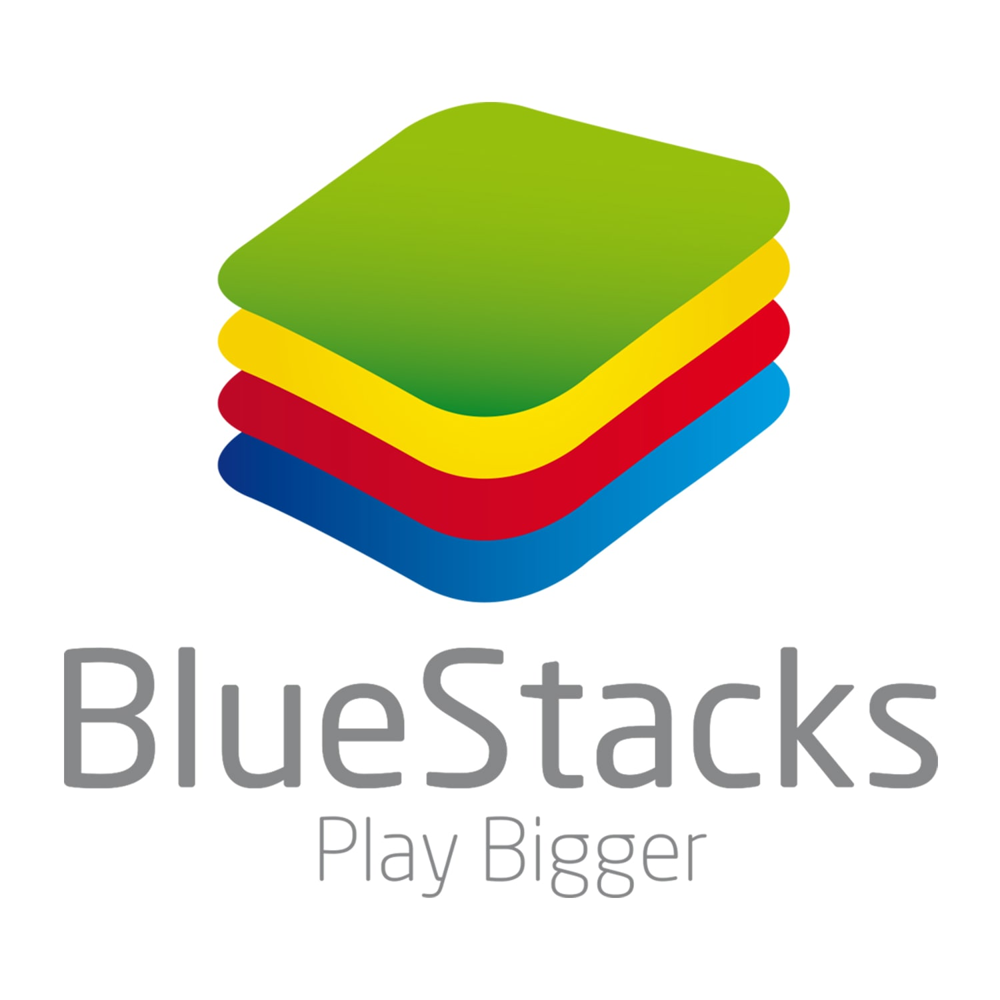
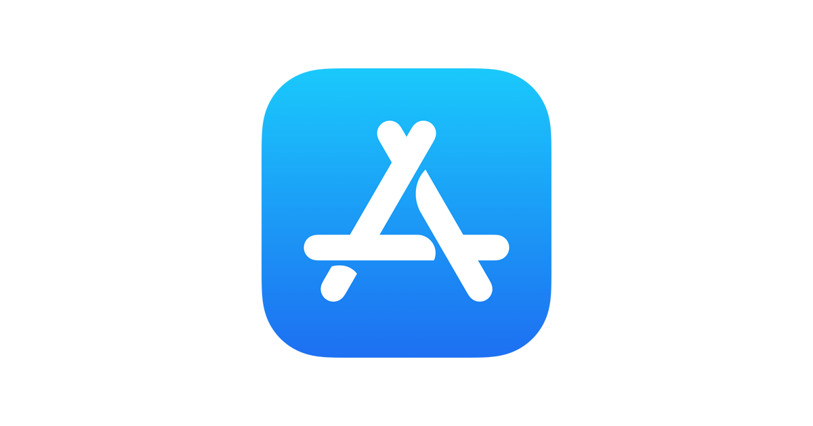
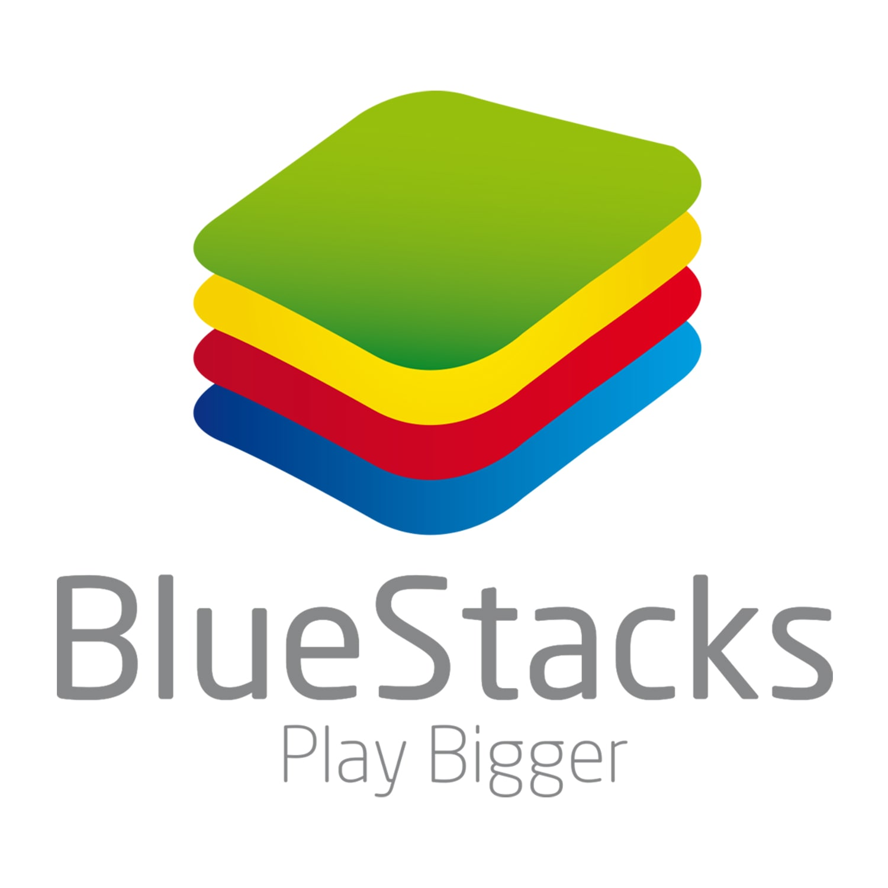

Accueil
Bas de page
Comment installer SnapChat :
Méthode :
SnapChat n'est disponible en téléchargement que sur téléphone mobile, sur l'app store ou google play. Pour une utilisation sur PC, la solution consiste à installer un émulateur Android pour PC, Bluestacks, ce qui permet de faire fonctionner des applis Android sous Windows.
Il suffit ensuite d'exécuter l'émulateur, de recherche Snapchat parmi les applications disponibles et de l'installer pour pouvoir commencer à l'utiliser !:
Installation pour Android
 Installation pour IOS

Lien d'installation pour PC

Installation pour IOS

Lien d'installation pour PC

MERCI D'AVOIR PRIS LE TEMPS DE LIRE NOS PAGES WEB !
Haut de page